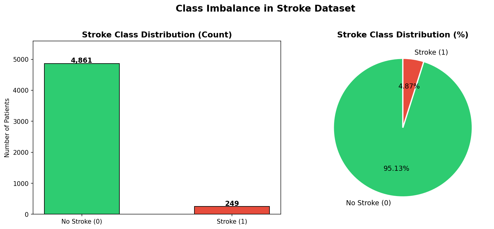
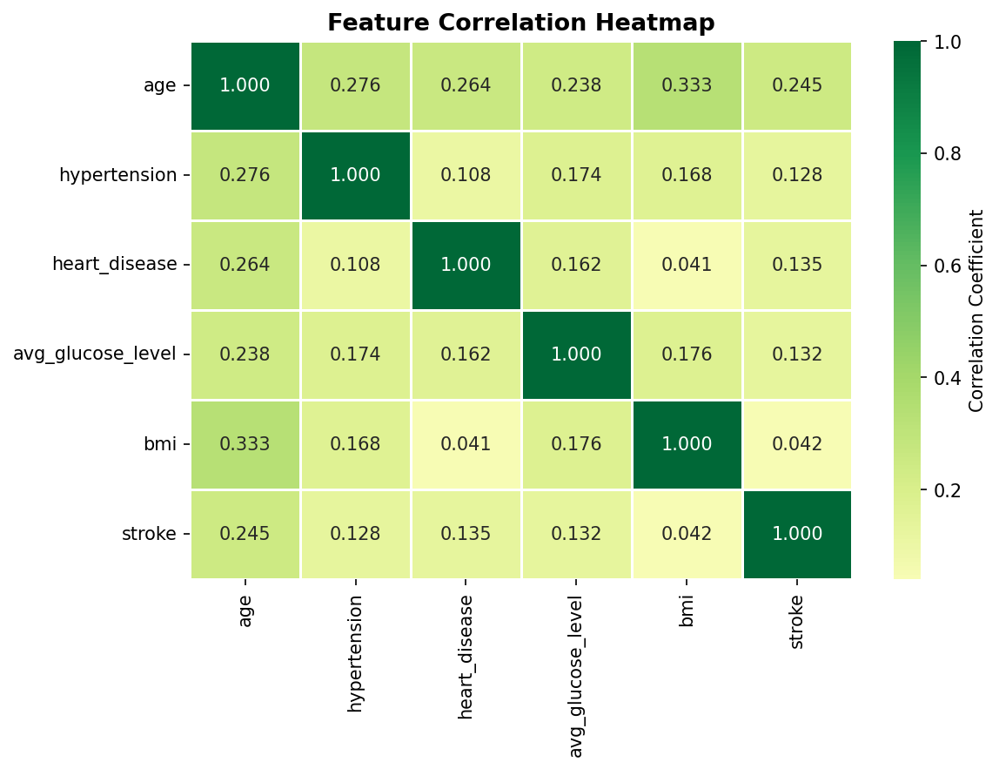
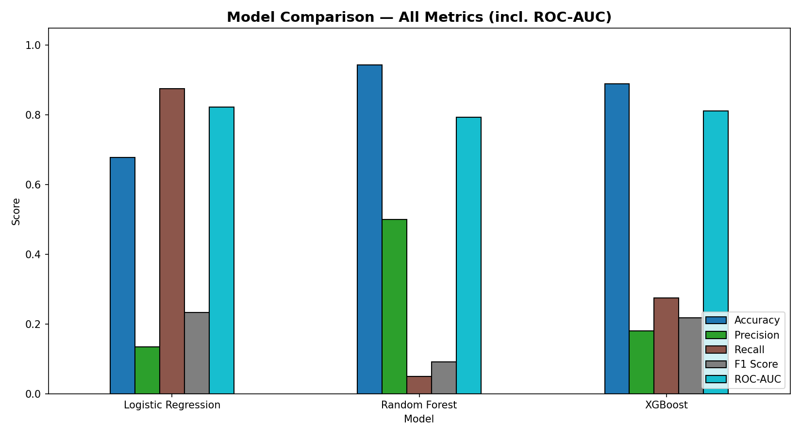
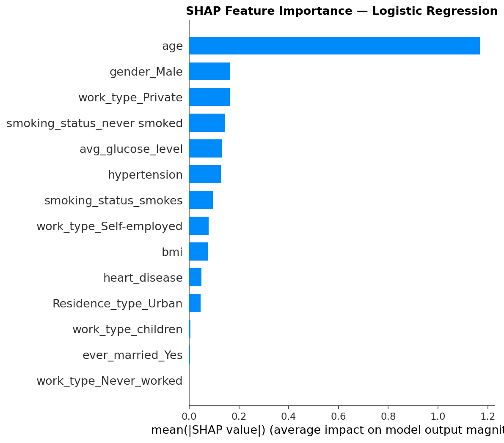
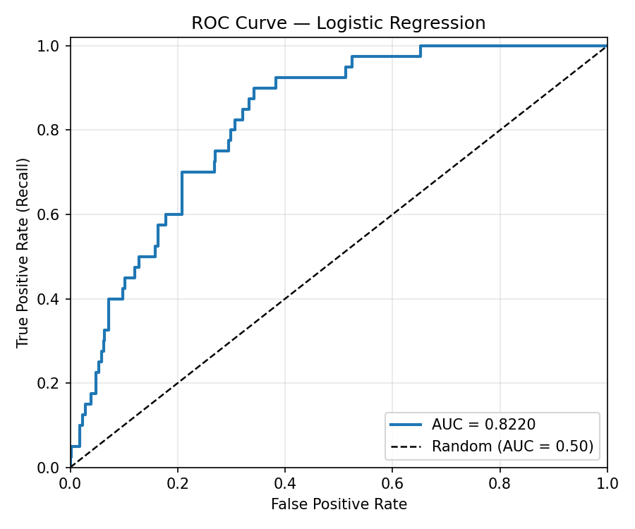
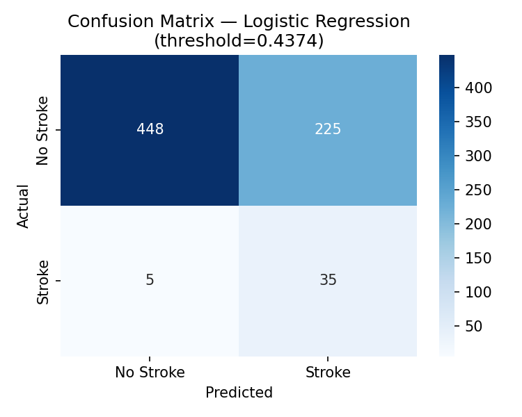

📦 What's in the box
rows in healthcare-dataset-stroke-data.csv — the well-known Kaggle stroke dataset (id, age, hypertension, glucose, BMI, smoking…)
rows in cleaned_data.csv — id dropped, missing BMI imputed, some rows removed
best_model.pkl, preprocessor.pkl, feature_names.json, best_threshold.json, best_model_name.json
File map
| Path | Purpose | Status |
|---|---|---|
model.ipynb | Main pipeline: EDA → preprocessing → 3 models → evaluation → SHAP → save | primary |
Balanceddata.ipynb | Re-runs training with SMOTE on an 80/20 split + a 70/15/15 split | experiments |
Untitled.ipynb | Empty scratch notebook | cruft |
model/ | Pickled Logistic Regression, preprocessor, feature names, decision threshold 0.4374 | artifacts |
outputs/ | 29 PNGs — class imbalance, correlations, ROC curves, confusion matrices, SHAP plots | rich |
.ipynb_checkpoints/ | Jupyter auto-saves committed by mistake | should be gitignored |
🔬 The pipeline, end to end
1 · Data prep
- Drops
id, imputesbmiN/A with mean - OneHotEncoder (drop="first") on categoricals: gender, ever_married, work_type, Residence_type, smoking_status
- StandardScaler on age, hypertension, heart_disease, avg_glucose_level, bmi
- Bundled in a
ColumnTransformerand pickled
2 · Splits
model.ipynb: stratified split, SMOTE applied to training set onlyBalanceddata.ipynb: compares 80/20 vs 70/15/15 (train/val/test), both with SMOTE- Class imbalance is severe — ~4.9% positive — so this is the right instinct
3 · Models trained
- Logistic Regression (class_weight balanced)
- Random Forest (300 trees, balanced_subsample)
- XGBoost (with
scale_pos_weight)
4 · Threshold tuning + explainability
- Best decision threshold picked via Youden's J (max of TPR − FPR) on ROC curve
- SHAP summary + importance plots saved
- "Best model" is selected by highest recall, not F1 or AUC
📊 The results (from model.ipynb)
| Model | Threshold | Accuracy | Precision | Recall | F1 | ROC-AUC |
|---|---|---|---|---|---|---|
| Logistic Regression 🏆 | 0.4374 | 0.677 | 0.135 | 0.875 | 0.233 | 0.822 |
| Random Forest | 0.5324 | 0.944 | 0.500 | 0.050 | 0.091 | 0.794 |
| XGBoost | 0.6453 | 0.889 | 0.180 | 0.275 | 0.218 | 0.812 |
Logistic Regression wins on recall (catches 87.5% of actual strokes) and on AUC. But precision is 13% — for every 100 people it flags, ~87 are false alarms. RF reports 94% accuracy but is essentially useless: it almost always predicts "no stroke", which is the trivial majority-class answer.
🧐 Honest opinion
The short version
This is a solid, well-presented student/portfolio project on a classic Kaggle dataset. The thinking is right (stratified splits, SMOTE only on train, threshold tuning, SHAP, multiple algorithms), the visual output is genuinely impressive, and the code shows real understanding of why imbalanced classification is hard. It is not production-grade medical software, and the "winning" model's precision means it's nowhere near clinically deployable — but as a learning artifact it punches above its weight.
👍 What's good
- Methodologically careful. SMOTE is applied after the split, not before — a mistake even some published papers make.
- Threshold tuning with Youden's J instead of blindly using 0.5. That's the right move on imbalanced data.
- Three model families compared on the same footing, with confusion matrices and ROC curves saved per split.
- SHAP plots for explainability — important in any health context.
- Preprocessor + model + feature names + threshold are all pickled together, so the artifact is actually reusable.
- The
outputs/folder is a portfolio in itself — 29 charts, consistently styled.
👎 What concerns me
- "Best by recall" is dangerous framing. 87% recall at 13% precision means the model is flagging roughly a third of all patients as stroke risks. In any real screening scenario that's an unusable alert rate.
- BMI imputation is mean-fill — fine for a learning project, but BMI missingness here correlates with stroke outcome, so this leaks information.
- No held-out test set in the main notebook — model.ipynb seems to evaluate on what it trained-and-resampled near; the cleaner train/val/test split lives in
Balanceddata.ipynband the two aren't reconciled. - No README, no requirements.txt, no
.gitignore..ipynb_checkpoints/is committed.Untitled.ipynbis empty. - Two notebooks with overlapping logic instead of one source of truth + a config flag. Functions like
build_preprocessorandprint_distributionare duplicated. - No tests, no inference script. There's a
best_model.pklbut nopredict.pyshowing how to use it on a new patient. - The dataset itself is known to be problematic (5,110 rows, only ~1 male stroke case in some slices, BMI N/A patterns) — any conclusions are limited by that, not by your code.
🛠️ If you wanted to take this further
Productionize
Add a predict.py that loads the pickled preprocessor + model + threshold and exposes a single predict(patient_dict) function. Wrap it in FastAPI for a demo endpoint.
Clean the repo
Add .gitignore (checkpoints, .pkl optional), a requirements.txt, a README with the metrics table above, and delete Untitled.ipynb.
Tighten methodology
Use Pipeline + cross_val_score with stratified K-fold rather than a single split, optimize threshold on a validation set, and report precision-recall AUC (more honest than ROC-AUC on 5% prevalence).
Better imputation
Replace mean-fill for BMI with an iterative imputer or a "missing" indicator — the missingness itself is signal here.
Calibrate
Run CalibratedClassifierCV so the predicted probabilities mean what they say. Useful for any downstream risk-tier UI.
Frame the trade-off
Don't pick "best by recall." Pick the operating point and justify it: e.g. "at recall=0.7 precision is X" — that's the conversation a clinician can actually have.
🖼️ A taste of the charts already in the repo
Class imbalance

Correlation heatmap

Model comparison

SHAP feature importance

ROC — Logistic Regression

Confusion matrix — LR

🧾 Verdict
You clearly understand the ML side — the careful SMOTE placement, threshold tuning, and SHAP work tell me that. What's missing is the boring stuff around the model: a README, an inference script, a clean repo, and a more honest framing of the precision/recall trade-off. Do those four things and this goes from "good notebook" to "good portfolio project."